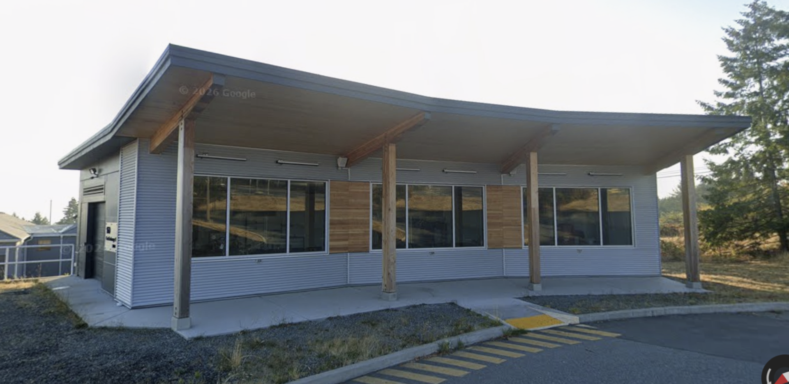
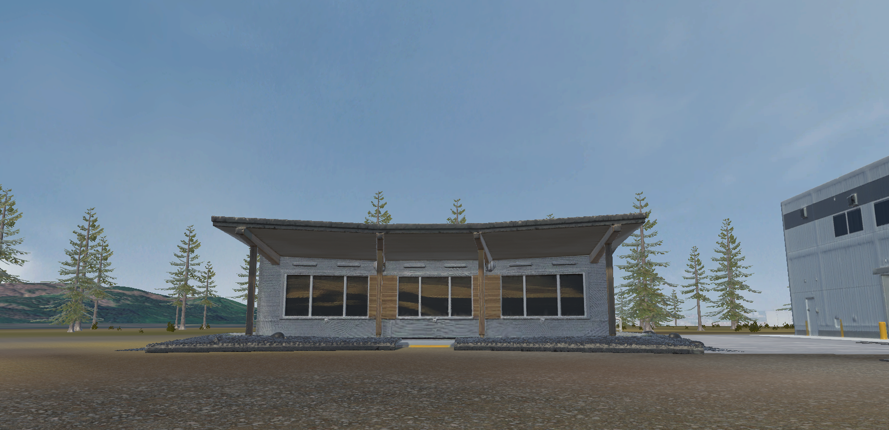

Project Overview
This visualization work is part of the broader ACET Cumberland District Energy Project, which explores the potential for using warm water from abandoned, flooded coal mines to heat and cool buildings in the Village of Cumberland, British Columbia. The proposed minewater geoexchange system would use the relatively stable temperatures of underground mine water, together with heat pumps, to provide low-carbon heating and cooling for buildings in the community.
The project investigates how minewater geoexchange could support cleaner and more resilient community development by reducing emissions, lowering energy costs, and supporting future developments such as affordable housing, public facilities, commercial space, and local economic activity.
My work focuses on using scenario-based landscape visualization to help communicate this complex energy system in a more accessible and place-based way. By visualizing possible future scenarios, the project aims to support community engagement, dialogue, and shared understanding around what clean energy transitions could look like in place.
Why Visualization Matters
The transition to clean energy systems is not only a technical challenge but also a social and spatial one. District energy systems can support low-carbon heating and cooling by moving thermal energy through networks that connect multiple buildings, yet much of this infrastructure is underground or otherwise difficult for the public to see and understand. This can make it challenging for communities to engage meaningfully with how such systems work, where they are located, and what they may mean for local development. In turn, this lack of understanding and familiar can create barriers for garnering the public support necessary for effective planning and local development.
Scenario-based visualization can help communities:
- See possible future conditions
- Understand spatial implications
- Support dialogue and reflection
- Engage with planning discussions more meaningfully
Cumberland, BC
The Village of Cumberland is located in the Comox Valley on Vancouver Island, British Columbia. With a 2021 population of less than 5,000 residents, Cumberland experienced an 18.5% population increase between 2016 and 2021, reflecting a period of rapid local growth and change. The Village combines a historic coal-mining identity with a growing reputation as a recreation-oriented community shaped by access to trails, forested landscapes, and nearby Comox Lake.
Cumberland provides a useful case for exploring how future energy systems can be communicated visually because of its compact geography, resource history, changing community identity, and emerging interest in low-carbon infrastructure opportunities. Rather than presenting one fixed future, this project uses scenario-based visualization to explore how different energy and landscape possibilities might be represented, interpreted, and discussed.
Visualization as an Approach
This project uses scenario-based landscape visualization to create an interactive, first-person experience of possible energy and landscape futures in Cumberland. Rather than engaging with the project only through maps, reports, or technical diagrams, users can navigate a virtual environment from a ground-level perspective and explore how proposed energy infrastructure may relate to the surrounding landscape.
The visualization is developed in Unity3D, a game engine that supports interactive, open-world environments. Building on established approaches in landscape visualization and immersive planning tools, and drawing from TRIAS Lab, Unity3D is used to create terrain, first-person movement, and interactive visual elements. Supporting software, including QGIS and GIMP, is used to prepare spatial data, textures, models, and other visual materials for integration into the Unity3D environment.
A key part of this process is the development of conceptual 3D models that help make otherwise technical or hidden infrastructure more visible. For example, the pump house design was inspired by the operational mine water geoexchange district energy system at Vancouver Island University Nanaimo campus. The 3D pump house model was generated using Meshy AI and incorporated into the Unity3D environment as a conceptual visual element.
Pump House Model


The project also explores the use of narrative capture methods, including audio and screen-recorded walkthroughs, to document how participants interpret different scenarios as they move through the visualization. Overall, this work positions visualization as a complementary tool in clean energy planning. Alongside spatial maps, technical models, planning documents, and community engagement processes, scenario-based visualization can help make energy transitions more tangible, place-based, and discussable.